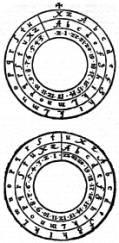

5 No.lı liste, 6 atlet, 6 şort, 6 mendil, araştırmacıları hep şaşırtmıştır; özellikle çoraplara hiç yer verilmediği için.
(Woody Allen, Getting even, New York, Random House, 1966, ‘The Metterling List’, s. 8)
O günlerde -yaklaşık bir ay önce- Lia bir aylık bir dinlencenin bana iyi geleceğine karar verdi. “Yorgun görünüyorsun,” diyordu. Belki de Plan yıpratmıştı beni. Hem bebeğin de, büyükannesiyle büyükbabasının dedikleri gibi, temiz havaya gereksinimi vardı. Arkadaşlar küçük bir dağ evi bulmuşlardı bize.
Hemen yola çıkamadık. Milano’da yoluna koymam gereken bazı işler vardı. Lia da, insan tatile çıkacağını bilirse, hiçbir şey yolculuk öncesi, kentte kısa bir tatilden daha dinlendirici olamaz, diyordu.
O günlerde, ilk kez Plan’dan söz ettim Lia’ya. Daha önce hep bebekle uğraşıyordu. Belbo ve Diotallevi’yle bir çeşit bilmece çözmekle uğraştığımızı, gece gündüz bunun üstünde çalıştığımızı sezinliyordu. Ama bu konuda hiçbir şey söylememiştim ona; benzerlik psikozu üstüne bana nutuk attığı günden beri. Belki de utanıyordum.
Plan’ı en ince ayrıntılarına varıncaya dek, baştan sona anlattım ona. Diotallevi’nin hastalığından, yanlış bir şey yapmışım gibi suçluluk duygusuna kapıldığımdan söz ettim. Plan’ı olduğu gibi göstermeye çalıştım: bir hüner gösterisi.
“Bum,” dedi Lia, “bu iş hiç hoşuma gitmedi.”
“Güzel değil mi, yani?”
“Denizkızları da güzeldi. Bak: bilinç-dışın hakkında ne biliyorsun?”
“Hiçbir şey. Bilinç-dışım var mı, yok mu, onu bile bilmiyorum:”
“Gördün mü? Şimdi, keyif ehli bir Viyanalı düşün. Dostlarını -bu arada kendini de-eğlendirmek için, bütün o alt-benlik ve Oedipus masallarını uyduruyor; hiçbir zaman görmediği düşleri, hiçbir zaman karşılaşmadığı küçük Hans’ları uyduruyor... Sonra ne oluyor? Ciddi ciddi nörotik olmaya can atan milyonlarca insan çıkıyor ortaya. Binlerce de, onları sömürmeye hazır insan.”
“Lia, sen paranoyaksın.”
“Ben mi? Paranoyak olan sensin asıl.”
“Belki ikimiz de paranoyağız, ama hiç değilse şunu kabul etmelisin: Ingolf’un metninden yola çıktık biz. Doğal bir şey bu; insan Tapınakçılar’ın bir mesajıyla karşılaşınca, şifresini çözmek ister. Belki biraz ileri gittik, şifre çözenleri alaya almak için yaptık bunu; ama ortada bir mesaj vardı.”
“Bütün bildiğin, şu Ardenti’nin sana anlattıkları; dediğine bakılırsa, o adam müthiş bir sahtekâr. Şu mesajı görmek isterdim doğrusu.”
Bundan kolay bir şey olamazdı; mesaj, dosyalarımın arasındaydı.
Lia kâğıdı aldı, evirip çevirdi, burnunu kırıştırdı, mesajın şifreli olan ilk bölümünü daha iyi görebilmek için gözlerinin üstüne düşen perçemleri kaldırdı. “Hepsi bu mu?” dedi.
“Yetmez mi?”
“Yeter de artar bile. Bana iki gün izin ver, düşüneyim. “Lia’nın herhangi bir şeyi düşünmek için iki gün izin istemesi demek, bana aptal olduğumu göstermeye karar vermesi demektir. Bu yüzden suçlarım onu hep; o da şöyle yanıtlar: “Aptal olduğunu anlarsam, seni gerçekten sevdiğime emin olurum. Aptal da olsan, seni seviyorum. Bundan hiç kuşkun olmasın.”
İki gün konuya hiç değinmedik. Zaten bu iki günün büyük bir bölümünü evin dışında geçirdi Lia. Akşamları bir köşeye büzülmüş, notlar alırken, birbiri ardısıra kâğıtlar yırtarken görüyordum onu.
Dağa çıkınca, bebek bütün gün çayırlarda yuvarlandı durdu. Lia akşam yemeğini hazırladı; yemek yememi, iğne ipliğe döndüğümü söyledi. Yemekten sonra, ona az sodalı, bol buzlu bir duble viski hazırlamamı istedi; bir sigara yaktı, ancak önemli anlarda yapardı bunu; oturmamı söyledi, sonra da açıkladı:
“Dikkatli dinle, Bum, çünkü en yakın açıklamaların her zaman en doğru açıklamalar olduğunu göstereceğim sana. Albay Ardenti denen adam, Ingolf’un, Provins’de bir mesaj bulduğunu söylemiş size; bunun doğruluğundan hiç kuşku duymuyorum. Ingolf yerin dibine inmiş, içinde bu metnin bulunduğu bir mahfaza bulmuş olsa gerek,” parmağıyla Fransızca satırlara vuruyordu. “Kimse bize onun elmas kakmalı bir mahfaza bulduğunu söylemiyor. Albayın size anlattığı tek şey, Ingolf’un notlarına göre, mahfazanın satılmış olduğu. Bunda şaşılacak bir şey yok; antika bir mahfazaydı o. Ona biraz para getirmiş olabilir, ama ömrünün sonuna dek bu gelirle geçinmiş olamaz. Babasından küçük bir miras kalmış olmalı.’
“Mahfazanın sıradan bir mahfaza olması gerektiğini nereden çıkarıyorsun peki?”
“Çünkü bir sipariş listesi bu. Gel, birlikte bir kez daha okuyalım:
a la... Saint Jean
36 p charrete de fein
6...entiers avec saiel
p... les blancs mantiax
r...s... chevaliers de Pruins pour la... j. nc
6 foiz 6 en 6 places
chascune foiz 20 a...120 a...
iceste est I’ordonation
al donjon li premiers
it li secunz joste iceus qui... pans
it al refuge
it a Nostre Dame d I ‘altre part d I ‘iau
it a I ‘ostel des popelicans
it a la pierre
3 foiz 6 avant la feste... la Grant Pute.
“Eee, ne çıkar bundan?”
“Tanrı aşkına, bir turistik rehbere bakıp Provins tarihinin bir özetini okumak hiç aklınıza gelmedi mi? Böyle yapmış olsaydınız, mesajın bulunduğu la Grange-aux-Dîmes’in, tüccarların bir araya geldikleri bir yer olduğunu hemen anlardınız; Champagne panayırlarının merkeziydi orası. Bundan başka, la Grange, Rue St. Jean’ın üstündedir. Provins’de her şey alınıp satılırdı, ama en çok rağbet gören şey kumaştı; draps ya da o zamanki yazılışı ile dras. Her kumaş parçasında bir güvence damgası vardı, bir çeşit mühür. Provins’in ikinci önemli ürünü, Haçlılar’ın Suriye’den getirdikleri kırmızı güllerdi. Öylesine ünlüydü ki bu güller, Lancaster’li Edmund, Blanche d’Artois ile evlenip Champaign Kontu unvanını aldığı zaman, armasına Provins’in kırmızı gülünü koydurdu; iki gül savaşının adı da buradan geliyor, çünkü York’ların simgesi beyaz bir güldü.”
“Bunları nereden öğrendin?”
“Provins turizm bürosunun yayımladığı iki yüz sayfalık küçük bir kitaptan. Fransız Kültür Merkez’inde buldum. Ama daha bitmedi. Provins’te Donjon denen bir kale var; adı üstünde. Port-aux-Pain var, Eglise du Refuge vardı. Orada burada, Meryem Ana adını taşıyan çeşitli kiliseler vardı. Eskiden -belki hâlâ duruyordur- Rue de la Pierre Ronde vardı; orada kontun uyruklarının ondalık vergi paralarını üstüne koydukları bir pierre de cens282 vardı. Bundan başka, Rue des Blancs Manteaux, sonra la Grande Pute Muce diye bir sokak vardı; nedenini tahmin edebilirsin. Genelevlerin bulunduğu sokaktı burası.”
“Peki Poplikanlar ne oldu?”
“Provins’te bir zamanlar Katarlar vardı; sonra bunlar usulüne uygun olarak yakıldılar. Baş sorgucu tövbe etmiş bir Katar’dı; adı da Robert le Bougre’du. Bu yüzden, artık Katarlar olmasa da, bir sokağa ya da bir bölgeye hâlâ Katarlar’ın yeri denmesinde şaşılacak bir şey yok.”
“1344’te hâlâ...”
“Bu belgenin 1344’ten kaldığını söyleyen kim? Sizin albay, saman arabasından 36 yıl sonra, diye okumuş, ama o günlerde p harfi belli bir biçimde, bir çeşit kesme işaretiyle yazıldığında post anlamına geliyordu. Kesme işaretiyle yazılmayan p ise pro anlamına geliyordu. Bu metnin yazarı, Grange’da, yani Rue Saint Jean’da –Ermiş Yuhanna gecesinde değil- yaptığı alışverişleri not eden kendi halinde bir tüccarmış. Bir -ya da her- araba dolusu samanın fiyatını otuz altı sous ya da kron ya da başka bir para birimiyle kaydetmiş,”
“Peki, ya yüz yirmi yıl?”
“Yıllardan söz eden var mı? Ingolf bir şey bulmuş, çevriyazıyla, 120 a... diye yazmış onu. Bunun a harfi olduğunu nereden çıkarıyorsunuz? O zamanlar kullanılan bir kısaltmalar listesine baktım; denier ya da dinarium için garip işaretler kullanıldığını gördüm; biri delta’ya benziyor, öteki teta’ya, sol yanı kırık bir daireye. İşi başından aşkın bir tüccar gibi, aceleyle, özensizce yazarsan, Albay Ardenti gibi bir kaçık onu a sanabilir; bir yerde 120 yıldan söz edildiğini okumuştur çünkü. Sen daha iyi bilirsin, Gül-Haçlar’ın tarihiyle ilgili herhangi bir kitapta okuyabilirdi bunu. Post 120 annos patebo’ya benzeyen bir şey bulmak istiyor. Sonra ne yapıyor? Birkaç yerde W e rastlıyor, bunu iterum’ un kısaltılmışı gibi algılıyor. Oysa iterura’un kısaltılmışı, ‘itm’dir; it, item demektir, yinelenen listeler için kullanılır.283 Bizim tüccar aldığı siparişlerden ne kazanacağını hesaplıyor, teslim ettiği malların listesini yapıyor-Provins gülleri için de sipariş almış olmalı; r ... s ... chevaliers de Pruins’in anlamı bu işte. Albayın vainjance diye okuduğu sözcük ise (aklında Kadoş şövalyeleri vardı çünkü) jonchee284 diye okunmalıdır. Güller çeşitli şenliklerde, çiçekten şapkalar ya da halılar yapmak için kullanılıyordu. Böylece, Provins mesajı şöyle okunmalıdır:
Saint Jean Sokağında.
Bir araba saman 36 sous.
Altı parça damgalı yeni kumaş
Blacns Manteaux Sokağına.
Haçlılar’a gül, jonchee yapmak için:
aşağıdaki altı yere altı demet gül:
her biri 20 denier’den,285 toplam 120 denier.
Aşağıdaki sıraya göre:
Birincisi Kale’ye
aynı şekilde ikincisi Porte-aux-Pains’dekilere
aynı şekilde Eglise de Refuge’e
aynı şekilde ırmağın karşı yakasındaki Notre Dame Kilisesine
aynı şekilde Katarlar’ın eski binasına
aynı şekilde Pierre-Ronde Sokağına.
Altışar gülden üç demet de fahişeler sokağına.
“Çünkü, belli, o zavallıcıklar da kendilerine gülden şapkalar yaparak şenliği kutlamak istiyorlardı.”
“Aman Allahım,” dedim, “galiba haklısın.”
“Elbette haklıyım. Bir kez daha söylüyorum: bu bir alışveriş listesi.”
“Dur bir dakika, bu bir alışveriş listesi olabilir, ama birincisi otuz altı görünmezden söz eden şifreli bir mesaj.”
“Doğru. Fransızca metni bir saatte hallettim, ama öteki iki gün uğraştırdı beni. Tritemius’u, hem Ambrosia’da, hem de Trivulziana’da286 incelemek zorunda kaldım; kütüphanecileri bilirsin; eski bir kitaba elini sürmene izin vermeden önce, kitabı yiyecekmişsin gibi bakarlar sana. Ama birinci mesaj da çok basit; sen kendi başına da çözebilirdin. Her şeyden önce, ‘Les 36 inuisibles separez en six bandes’, bizim tüccarın Fransızcasıyla aynı mı sence? Aslında, siz de bunun, Gül-Haçlar’ın Paris’te göründükleri on yedinci yüzyıldan kalma bir kitapçıkta kullanılan anlatım olduğunun ayrımına varmışsınız, ama tıpkı Şeytancılar gibi akıl yürütmüşsünüz: mesaj Tritemius’un yöntemine göre şifrelenmişse, bu Tritemius’un Tapınakçılar’dan kopya ettiği anlamına gelir; Gül-Haçlar’ın çevresinde yaygın olarak kullanılan bir tümceyi alıntıladığına göre de, Gül-Haçlar’a atfedilen planın Tapınakçılar’ın planından başka bir şey olmadığı anlamına gelir. Bu mantığı, aklı başında her insanın yapabileceği gibi, tersine çevirmeyi dene: mesaj Tritemius’tan sonra yazılmıştır: on yedinci yüzyıl Gül-Haçlar’ı arasında kullanılan deyimler kullanıldığına göre de, on yedinci yüzyıldan sonra yazılmıştır. Bu noktada en basit varsayım nedir? Ingolf, Provins mesajını buluyor; o da tıpkı Albay gibi, Hermetik gizemler delisi olduğu için, otuz altıyla yüz yirmiyi görür görmez, Gül-Haçlar’ı düşünüyor. Ingolf, aynı zamanda bir şifreyazı delisi olduğu için de, Provins mesajını şifreleyerek eğleniyor. Bir alıştırma yapıyor; o güzelim Gül-Haç tümcesini Tritemius’un şifre sistemine göre yeniden yazıyor.”

“Dâhice bir açıklama, ama Albay’ınkinden daha geçerli değil.”
“Buraya kadar, evet. Ama tut ki, bir kestirimde bulunuyorum, sonra bir ikinci, sonra bir üçüncü kestirim; tümü de birbirini destekliyor bunların. O zaman, doğru kestirimde bulunduğundan emin olmaz mısın? Ben bir varsayımdan yola çıktım.
Ingolf’un kullandığı sözcükler, Tritemius’tan alınan sözcükler değil. Bunlar da, aynı Asur-Babil kabalası üslubunda, ama aynı değil. Gene de, Ingolf kendisini ilgilendiren harflerle başlayan sözcükler kullanmak isteseydi, Tritemius’ta bol bol bulabilirdi. Niçin o sözcükleri seçmedi?”
“Niçin?”
“Belki de, ikinci, üçüncü, dördüncü durumdaki belli harflere gereksinimi vardı. Belki de, bizim dâhi Ingolf’umuz çok-şifreli bir mesaj istiyordu. Belki de Tritemius’tan daha zeki olmak istiyordu. Tritemius bellibaşlı kırk şifre sistemi önerir: birincisinde yalnızca başharfler hesaba katılır; bir başkasında birinciyle üçüncü harfler; bir başkasında bir başharf alınır, bir başharf alınmaz; böylece sürüp gider. Biraz çabayla böyle yüz sistem daha icat edebilirsin, ikinci derecede önemli on şifre sistemine gelince, albay yalnızca birinci çemberi, en kolay olanı, dikkate almış. Ama ondan sonra gelenler, ikinci çemberin ilkesine göre işler. Senin için bir kopyasını çıkardım, işte burada. Tut ki, iç çember devingen olsun; A harfi dış çemberin herhangi bir harfine denk düşecek biçimde çevrilebilsin. Böylece, A yerine X yazılacağı, sonraki harflerin de bu sırayı izleyeceği bir sistem elde edebilirsin; A’nın U’ya denk düşeceği bir başka sistem de. Her çemberin üstünde bulunan yirmi iki harfle, on değil, yirmi bir şifre sistemi elde edebilirsin; yirmi ikinci ise işe yaramaz, çünkü Anın karşısına A gelir...”
“Her sözcüğün her harfine bu yirmi bir sistemi uyguladın mı, yoksa?..”
“Aklımı kaçırmadım ben; şansım da yolunda gitti. En kısa sözcükler altı harfli olduğundan, yalnızca ilk altı harfin önemli oldu-Su, geri kalan harflerinse salt göze hoş görünsün diye kullanıldığı açık. Neden altı harf? Şöyle düşündüm: diyelim ki Ingolf ilk harfi şifreledi, sonraki harfi atladı, üçüncü harfi şifreledi, sonraki iki harfi atladı, altıncı harfi şifreledi. Başharf için bir numaralı çemberi kullandığını varsayarak, ben de üçüncü harf için iki numaralı çemberi kullandım; ortaya bir tümce çıktı. Sonra, altıncı harf için üç numaralı çemberi denedim; bir tümce daha elde ettim. Ingolf un başka harfler de kullanabileceği olasılığını bir yana atmıyorum, ama üç olumlu kanıt bana yeter; dilersen sen kendi başına sürdürebilirsin.”
“Beni merakta bırakma. Ortaya ne çıktı?”
“Mesaja bir kez daha bak, hesaba katılan harflerin altını çizdim.”
“İlk mesajın ne olduğunu biliyoruz; otuz altı görünmezle ilgili olan mesaj bu. Şimdi, her üçüncü harfin yerine, ikinci çembere göre, başka bir harf koyarsak sonuç ne oluyor, bak: chambre des de-moiselles, l’aiguille creuse.”
“Bunu biliyorum, bu...
“En aval d’Elretat - La, Chambre des demoiselles - Sous le Fort du Frefosse Aiguille Creuse.287 Arşen Lüpen’in, Boş Kule’nin gizini bulduğunda, şifresini çözdüğü mesaj! Anımsayacaksın, Etretat’da, kumsalın kıyısında l’Aguille Creuse yükselir. Doğal bir kaledir bu; içinde barınılabilir. Jül Sezar’ın, Galya’yı istilâ ettiğinde kullandığı gizli bir silâhtı bu. Daha sonra Fransa kralları kullandılar burayı. Lüpen’in sınırsız gücünün kaynağı. Bilirsin, Lüpenologlar bu öyküye bayılırlar. Etretat’ya hac ziyaretine giderler, gizli geçitler ararlar, Leblanc’ın her sözcüğünün evirmecesini yaparlar... Ingolf, bir Gül-Haç uzmanı olduğu kadar, bir Lüpenologdur; şifre üstüne şifre...”
“Ama bizim Şeytancılar, Tapınakçılar’ın her zaman tepenin gizini bildiklerini, bu nedenle de mesajın on dördüncü yüzyılda Provins’de yazıldığını öne sürebilirlerdi...”
“Elbette, bunu biliyorum. Şimdi sıra üçüncü mesajda: üçüncü çemberi her sözcüğün altıncı harfine uygulayalım. Dinle: merde i’en ai marre de cette steganographie.288 Bu modern Fransızca; Tapınakçılar böyle konuşmuyorlardı. Böyle konuşan, Ingolf’tü. Bütün bu saçmalıkları şifrelemek için kafa patlattıktan sonra, yaptığını şifreli olarak canını cehenneme yollayarak bir kez daha eğlenmişti. Ama Ingolf incelikten yoksun değildi; dikkat edersen, üç mesajın üçü de otuz altı harften oluşuyor. Benim zavallı Bum’um, Ingolf da tıpkı sizler gibi oyun oynuyordu; o budala Albay ciddiye almıştı onu.”
“Peki, ama Ingolf niçin kayıplara karıştı?”
“Onun Öldürüldüğünü kim söyledi? Auxerre’de yaşamaktan, yalnızca eczacıdan, bir de, bütün gün sızlanıp duran evde kalmış kızından başka hiç kimseyi görmemekten bıkmış usanmıştı Ingolf. Belki de kalkıp Paris’e gitmiştir; eski kitaplarından birini satarak bir dul kadıncağız bulup yeni bir yaşama başlamıştır. Hani şu, günün birinde sigara almak için evden çıkan, yüzlerini karılarının bir daha hiç görmedikleri erkekler gibi.”
“Peki, ya Albay?”
“Polisin bile onun öldürüldüğünden emin olmadığını söylememiş miydin bana? Bir iş karıştırmış, kurbanları kimliğini belirleyince de tabanları yağlamış. Belki de şu anda Eyfel Kulesini Amerikalı bir turiste satıyordur; adı da Dupont olmuştur.”
Bütün cephelerde de yenilgiyi kabul edemezdim. “Pekâlâ, kabul ediyorum, bir alışveriş listesinden yola çıktık, ama iyi düşünürsen zekice davrandık. Biz de biliyorduk uydurduğumuzu, ama bir alışveriş listesini şiire dönüştürdük.”
“Plan’ınızın şiirle hiç ilişiği yok; kabasaba. Homeros’u okudum diye, Truva’yı yakmak insanın aklına gelmez. Homeros Truva’ nın yakılışını başka bir şeye dönüştürmüştü. Truva, aynı Truva değildi artık. Bundan böyle de eskisi gibi olamayacak. Oysa İlyada, kalıcı, anlam dolu; çünkü açık, aydınlık. Sizin Gül-Haçlar’ınızın manifestoları ne açık, ne de aydınlıktı; bir gurultudan başka bir şey değildi, ama bir giz vaat ediyordu. Bu nedenle de, birçok kimse onları gerçekleştirmeye çalıştı. Bu kimselerin her biri, manifestolarda ne bulmak istiyorsa onu buldu. Homeros’ta hiçbir giz yoktu. Oysa sizin Plan’ınız gizlerle dolu: karşıtlıklarla dolu çünkü. Bu yüzden, kendilerini Plan’la özdeşleştirmeye hazır binlerce güvensiz insan bulabilirsin. Her şeyi fırlatıp atın. Homeros yapmacık yapmamıştı; siz yapmacık yaptınız. Yapmacıklıktan sakının, yoksa herkes inanır size. Hekimlere, doğum yapan kadınlara dokunmadan önce ellerini yıkamalarını söyleyen Semmelweis’a inanmıyorlardı insanlar. Çok yalın şeyler söylüyordu çünkü. İnsanlar, dökülen saçların yeniden çıkmasını sağlayan losyon satıcısına inanırlar. Onun, bir arada bulunması olanaksız gerçekleri bir araya getirdiğini, mantıklı olmadığını, iyi niyetten yoksun olduğunu iç güdüleriyle sezerler. Ama onlara, Tanrı’nın karmaşık, derinliğine varılamaz olduğu söylenmiştir, bu yüzden de onların gözünde tutarsızlık, Tanrı’ya en yakın olan şeydir. En olmayacak şey, mucizeye en çok benzeyen şeydir. Siz, dökülen saçların yeniden çıkması için bir losyon icat ettiniz. Hiç hoşuma gitmiyor bu; çirkin bir oyun.”
Bu uyuşmazlık dağda geçirdiğimiz haftaların tadını kaçırmadı. Uzun yürüyüşler yaptım, ciddi kitaplar okudum; bebeğe o güne dek hiç böylesine yakın olmamıştım. Ama Lia ile aramızda dile getirilmemiş bir şey kalmıştı. Lia beni köşeye sıkıştırmıştı; beni küçük düşürdüğüne üzülüyordu, ama beni inandırdığına inanmıyordu.
Gerçekten de, Plan’ı özlüyordum. Onu bırakmak istemiyordum, gereğinden uzun bir süre birlikte yaşamıştım onunla.
Birkaç gün önce, Milano’ya giden tek trene yetişmek için erkenden kalktım. Milano’ya vardığımda Belbo Paris’ten telefon etti; böylece, benim için henüz bitmemiş olan Öyküye yeniden başladım.
Lia haklıydı. Bu konuyu daha önce konuşmalıydık. Ama gene de inanmayacaktım ona. Plan’ın doğuşunu yaşamıştım; tıpkı Tiferet’in -Sefirot gövdesinin yüreği, Yasa’nın Özgürlükle uyumu olan Tiferet’in- gerçekleştiği an gibi. Diotallevi, Mose Cordo’nun bizi uyardığını söylemişti: “Her kim, Tevrat’tan ötürü cahillere, yani Yehva’nın tüm halkına karşı böbürlenirse, Tiferet’in, Malkut’a karşı böbürlenmesine yol açar.” Ama Malkut’un, bu dünyanın Kral’ının ne olduğunu göz kamaştırıcı yalınlığı içinde ancak şimdi anlıyorum. Gerçeği anlamak için hâlâ vakit var, ama gerçeğe göğüs germek için iş işten geçti belki de.